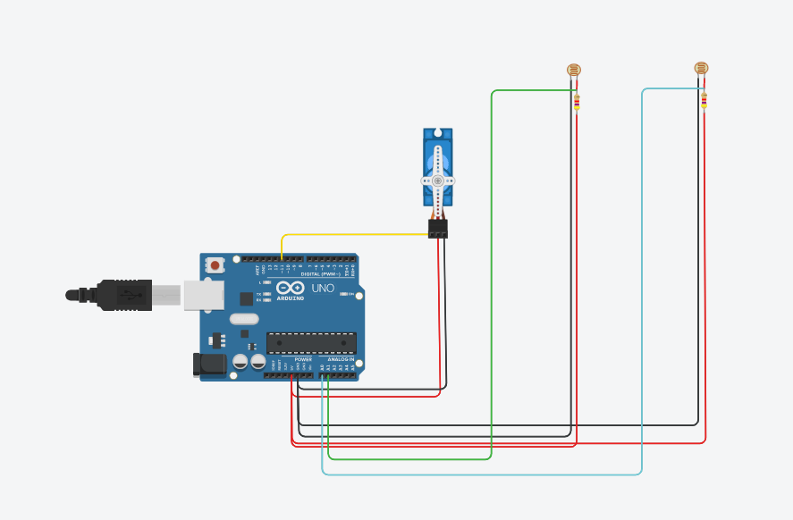

During my summer break, I wanted to take on a simple project relating to solar energy but using components I was already familiar with. I got inspired by one of my seniors FYP which was a solar tracker tracking the position of the Sun in real-time using data from the web. From that, I decided to build a mini solar tracker however not on the same scale. This project I had taken on would be able to track the position of the Sun over the day using light dependent resistors. This mini solar tracker could be used to power a 5 Volt device via solar power as it will be charged up with solar energy throughout the day.
To begin the project, I first ran a simulation on Tinkercad. After connecting the circuit with all its components, I had to test the code for it. This took several tries as running the simulation without the solar panel as reference proved to be confusing in trying to determine which way the servo motor was turning. The tinkercad simulation circuit is as shown on the right.
Upon the successful circuit simulation, I had to setup a stand to prop my tracker. For this, I cut up a polystrene board and glued the pieces together to create a small stand as shown in the main image above. Aside from having to put together the stand, I had to also solder the voltage divider circuit for the light dependent resistors. After completing both of that, I could put together the final version of my mini solar tracker which used a powerbank to power up the Arduino Uno. The final product is as shown on the left.